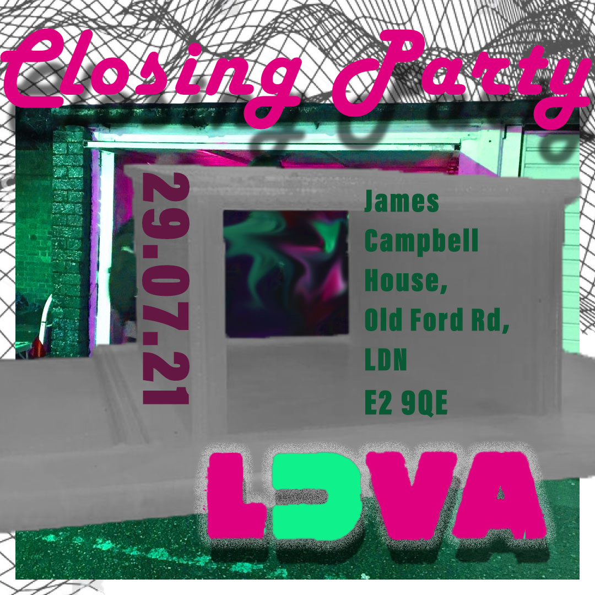

LDVA Closing Party is a phigital collation of the galleries new found frequencies and collaborators
throughout this year, having had to re-think physicality, LUVA [Lock Up Visual Arts] coined the ‘D’ during
the ‘lockDowns’ sparking a turn to digital mediums. Celebrating the creations existing between the digital
and re-embracing the physical, we explore the different dimensions of artists’ work through sound, VR
projection and sculpture in our immersive [IRL] garage space.
Utilising the open source 3D model created to house virtual shows, initially our ‘Make Something That Makes
You Feel Good’ in May 21, during the height of isolation. BAFA students curate their own singular
exhibitions in our garage as we delve into practice that crosses borders of the online and offline,
intersecting the individual through a collaborative structure.
Featuring as part of Central Saint Martins Graduate Showcase, the exhibition will present graduating BA Fine
Art students and collaborate with the virtual group ‘House Mates’, alongside the editorial podcast group
‘Raid.R’.
Exhibiting artists:
Naz Smouna
Bea Taylor Searle
Anna Bogomolova
Zoe Horne
MJ Jacobs
Hazel Thomlinson
Sarah Allen